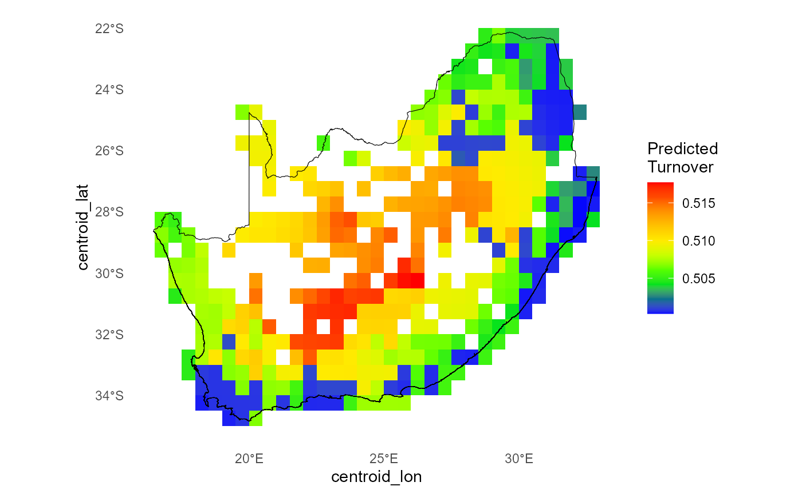
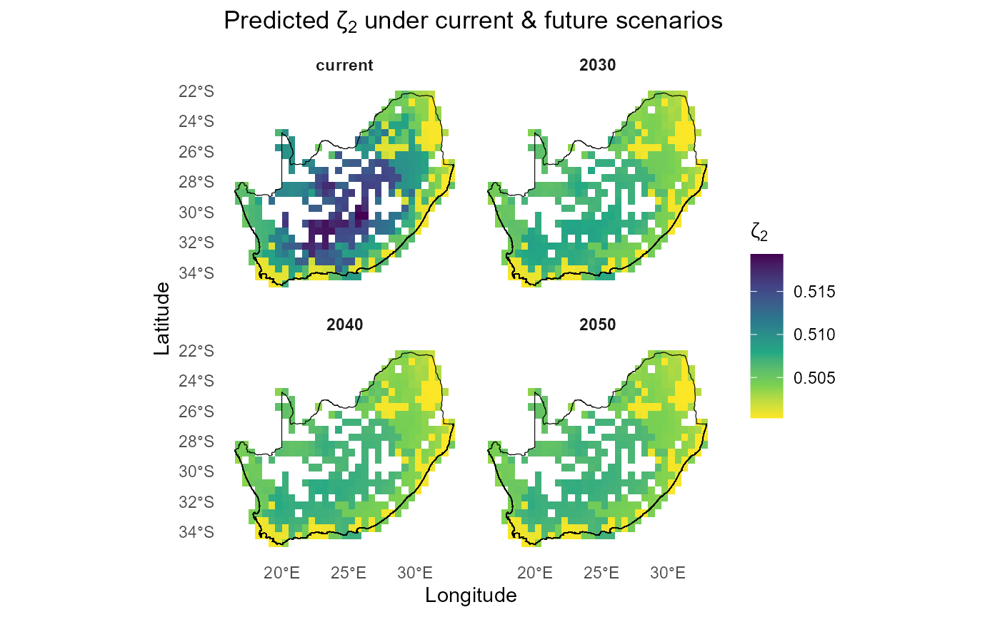

dissmapr
Predicting Spatial Patterns of Biodiversity Turnover
This vignette focuses on generating spatial predictions from fitted biodiversity-turnover models. The goal is to show how model outputs can be projected across the analysis grid to create continuous spatial layers for mapping and interpretation.
To keep the example reproducible and quick to run, we use a small set
of example objects bundled with dissmapr. The setup chunk
below loads the required packages, reads the bundled data snapshot, and
unpacks the prediction outputs, raster template, species data, and
boundary objects needed for spatial prediction.
# Load the packages used in this vignette.
library(dissmapr)
library(ggplot2)
library(dplyr)
library(purrr)
# Load the bundled example data snapshot.
inputs = readRDS(system.file("extdata", "dissmapr_vignettes.rds", package = "dissmapr"))
# Unpack the example objects used below.
grid_spp_pa = inputs$grid_spp_pa # Presence-absence species data
env_vars_reduced = inputs$env_vars_reduced # Selected environmental variables
grid_env = inputs$grid_env # Grid-level environmental data
sp_cols = inputs$sp_cols # Species column names
zeta2 = inputs$zeta2 # Pairwise zeta-diversity output
ispline_gdm_tab = inputs$ispline_gdm_tab # Fitted I-spline/GDM results table
grid_spp = inputs$grid_spp # Grid-level species data
rsa = inputs$rsa # South Africa boundary1. Predict current Zeta Diversity (zeta2) using
predict_dissim()
In this step we use our fitted order-2 GDM (zeta2) to
generate a spatial map of pairwise compositional turnover (ζ₂) under
current conditions. By calling predict_dissim() we
- compute each site’s sampling‐effort‐adjusted species richness and
mean distance to all other sites;
- apply the same environmental I-spline transformations used in the
model;
- predict the Jaccard-scaled turnover (ζ₂) on the 0–1 scale;
- optionally plot the resulting heatmap with your study boundary overlaid.
We set a random seed for reproducibility (so Monte Carlo sampling
inside predict_dissim() yields the same results each time),
pull out just the species columns once, then inspect the returned
predictors_df to confirm its dimensions, column names, and
a quick peek at the key model outputs.
# Predict current zeta diversity using `predict_dissim` with sampling effort, geographic distance and environmental variables
# Only non-colinear environmental variables used in `zeta2` model
set.seed(123) # set.seed to generate exactly the same random results i.e. sam=100
spp_cols = names(grid_spp_pa[,-(1:6)])
predictors_df = dissmapr::predict_dissim(
grid_spp = grid_spp_pa,
species_cols = spp_cols,
env_vars = env_vars_reduced,# env_vars_reduced[,-8]
zeta_model = zeta2, # From simple order 2 run above
# zeta_model = ispline_gdm_tab$zeta_gdm_list[[1]], # From list of Zeta.msgdm models
grid_xy = grid_env,
x_col = "centroid_lon",
y_col = "centroid_lat",
bndy_fc = rsa, # Optional feature collection to plot as boundary
show_plot = TRUE
)
# Check results
dim(predictors_df)
#> [1] 415 14
names(predictors_df)
#> [1] "temp_mean" "iso" "temp_wetQ" "temp_dryQ"
#> [5] "rain_dry" "rain_warmQ" "obs_sum" "distance"
#> [9] "richness" "pred_zeta" "pred_zetaExp" "log_pred_zetaExp"
#> [13] "centroid_lon" "centroid_lat"
head(predictors_df[,5:11])
#> rain_dry rain_warmQ obs_sum distance richness pred_zeta pred_zetaExp
#> 1 -1.171906 -0.2222718 -0.2926985 903.0437 2 0.013475636 0.5033689
#> 2 -1.171906 -0.1743223 -0.2340532 915.4655 31 0.025543916 0.5063856
#> 3 -1.051673 0.1852987 -0.2818954 931.1100 10 0.012838967 0.5032097
#> 4 -1.171906 0.2572229 -0.2865253 949.9390 7 0.011283704 0.5028209
#> 5 -1.051673 0.4889786 -0.2880686 971.8672 6 0.010089501 0.5025224
#> 6 -1.051673 0.5449196 -0.1321955 996.7561 76 0.009101051 0.50227522. Predict future Zeta Diversity using
predict_dissim()
Below we expand our workflow to forecast how ζ₂ respond to three extreme climate futures (2030, 2040, 2050) alongside the current scenario.
First, we define and center-scale each future by adding large temperature increments and rainfall multipliers, then bundle them into a named list of four environmental data frames:
# 1. Identify species & env columns
# spp_cols = names(grid_spp_pa)[-(1:6)]
all_vars = names(env_vars_reduced)
temp_vars = grep("^temp", all_vars, value = TRUE)
rain_vars = grep("^rain", all_vars, value = TRUE)
iso_vars = grep("^iso", all_vars, value = TRUE)
obs_var = "obs_sum"
# 2. Extreme future shifts
horizons = c("2030","2040","2050")
mean_delta = list(
temp = c("2030"= +2, "2040"= +4, "2050"= +6),
iso = c("2030"= +0.5,"2040"= +1.0,"2050"= +1.5),
rain = c("2030"= 0.9, "2040"= 0.8, "2050"= 0.7),
effort= c("2030"= 1.3, "2040"= 1.6, "2050"= 2.0)
)
exagg_factor = c("2030"=1.5, "2040"=2.0, "2050"=2.5)
# 3) helper to amplify deviation from the mean
amplify = function(x, factor) {
m = mean(x, na.rm=TRUE)
m + (x - m) * factor
}
# # 4. Save original scaling parameters
# sc_params = scale(env_vars_reduced)
# mu = attr(sc_params, "scaled:center")
# sigma = attr(sc_params, "scaled:scale")
# 4. Build list of future env tibbles
env_scenarios = c(
list(current = env_vars_reduced),
map(horizons, function(yr) {
df = env_vars_reduced
# mean shifts
df[temp_vars] = df[temp_vars] + mean_delta$temp[yr]
df[iso_vars] = df[iso_vars] + mean_delta$iso[yr]
df[rain_vars] = df[rain_vars] * mean_delta$rain[yr]
df[[obs_var]] = df[[obs_var]] * mean_delta$effort[yr]
# amplify spatial variation
df[temp_vars] = map_dfc(df[temp_vars], amplify, factor = exagg_factor[yr])
df[iso_vars] = map_dfc(df[iso_vars], amplify, factor = exagg_factor[yr])
# clamp obs_sum
df[[obs_var]] = pmin(pmax(df[[obs_var]], 50), 8000)
df
}) |> set_names(horizons)
)
# names(env_scenarios) = names(horizons)
# 5. Prepend current conditions
# env_scenarios = c(list(current = env_vars_reduced), env_futures)
str(env_scenarios, max.level = 1)
#> List of 4
#> $ current: tibble [415 × 7] (S3: tbl_df/tbl/data.frame)
#> $ 2030 : tibble [415 × 7] (S3: tbl_df/tbl/data.frame)
#> $ 2040 : tibble [415 × 7] (S3: tbl_df/tbl/data.frame)
#> $ 2050 : tibble [415 × 7] (S3: tbl_df/tbl/data.frame)Next, we loop through each scenario, re-apply the original centering
and scaling, and call our predict_dissim() helper to
compute ζ₂. We tag each result with its scenario name and combine them
into one tidy data frame:
set.seed(123)
scenario_dfs = purrr::imap(env_scenarios, ~ {
df = dissmapr::predict_dissim(
grid_spp = grid_spp,
species_cols = spp_cols,
env_vars = .x,
zeta_model = zeta2,
grid_xy = grid_env,
x_col = "centroid_lon",
y_col = "centroid_lat",
skip_scale = FALSE,
show_plot = FALSE
)
df$scenario = .y
df
})
str(scenario_dfs, max.level=1)
#> List of 4
#> $ current:'data.frame': 415 obs. of 15 variables:
#> $ 2030 :'data.frame': 415 obs. of 15 variables:
#> $ 2040 :'data.frame': 415 obs. of 15 variables:
#> $ 2050 :'data.frame': 415 obs. of 15 variables:
# all_preds = bind_rows(scenario_dfs) %>%
# mutate(scenario = factor(scenario, levels = c("current", names(temp_shifts))))
all_preds = bind_rows(scenario_dfs)
head(all_preds)
#> temp_mean iso temp_wetQ temp_dryQ rain_dry rain_warmQ obs_sum
#> 1 1.730095 0.01726121 1.386855 0.5441361 -1.171906 -0.2222718 -0.2926985
#> 2 1.683898 -0.53540287 1.471251 0.4496825 -1.171906 -0.1743223 -0.2340532
#> 3 1.589813 0.21693689 1.234714 0.5570195 -1.051673 0.1852987 -0.2818954
#> 4 2.185359 0.69302984 1.511219 0.9937463 -1.171906 0.2572229 -0.2865253
#> 5 2.418605 1.23977219 1.589519 1.2042260 -1.051673 0.4889786 -0.2880686
#> 6 2.810088 1.89130325 1.817424 1.4313345 -1.051673 0.5449196 -0.1321955
#> distance richness pred_zeta pred_zetaExp log_pred_zetaExp centroid_lon
#> 1 903.0437 3 0.013475636 0.5033689 -0.6864321 28.75
#> 2 915.4655 41 0.025543916 0.5063856 -0.6804568 29.25
#> 3 931.1100 10 0.012838967 0.5032097 -0.6867483 29.75
#> 4 949.9390 7 0.011283704 0.5028209 -0.6875212 30.25
#> 5 971.8672 6 0.010089501 0.5025224 -0.6881152 30.75
#> 6 996.7561 107 0.009101051 0.5022752 -0.6886070 31.25
#> centroid_lat scenario
#> 1 -22.25004 current
#> 2 -22.25004 current
#> 3 -22.25004 current
#> 4 -22.25004 current
#> 5 -22.25004 current
#> 6 -22.25004 currentWe can then quickly compare the spatial ζ₂ surfaces under each future:
ggplot(all_preds,
aes(centroid_lon, centroid_lat, fill = pred_zetaExp)) +
geom_tile() +
facet_wrap(~ scenario, ncol = 2) +
scale_fill_viridis_c(direction = -1, name = expression(zeta[2])) +
geom_sf(data = rsa, fill = NA, color = "black", inherit.aes = FALSE) +
coord_sf() +
labs(x = "Longitude", y = "Latitude",
title = expression("Predicted ζ"[2] * " under current & future scenarios")) +
theme_minimal() +
theme(strip.text = element_text(face = "bold"),
panel.grid = element_blank())
sessionInfo()
#> R version 4.5.2 (2025-10-31 ucrt)
#> Platform: x86_64-w64-mingw32/x64
#> Running under: Windows 11 x64 (build 26200)
#>
#> Matrix products: default
#> LAPACK version 3.12.1
#>
#> locale:
#> [1] LC_COLLATE=English_South Africa.utf8 LC_CTYPE=English_South Africa.utf8
#> [3] LC_MONETARY=English_South Africa.utf8 LC_NUMERIC=C
#> [5] LC_TIME=English_South Africa.utf8
#>
#> time zone: Africa/Johannesburg
#> tzcode source: internal
#>
#> attached base packages:
#> [1] stats graphics grDevices datasets utils methods base
#>
#> other attached packages:
#> [1] purrr_1.2.2 dplyr_1.2.1 ggplot2_4.0.3 dissmapr_0.2.0
#>
#> loaded via a namespace (and not attached):
#> [1] DBI_1.3.0 pbapply_1.7-4 geodata_0.6-9
#> [4] pROC_1.19.0.1 permute_0.9-10 rlang_1.2.0
#> [7] magrittr_2.0.5 otel_0.2.0 e1071_1.7-17
#> [10] compiler_4.5.2 mgcv_1.9-4 systemfonts_1.3.2
#> [13] vctrs_0.7.3 maps_3.4.3 reshape2_1.4.5
#> [16] stringr_1.6.0 pkgconfig_2.0.3 fastmap_1.2.0
#> [19] labeling_0.4.3 rmarkdown_2.31 prodlim_2026.03.11
#> [22] ragg_1.5.2 xfun_0.59 cachem_1.1.0
#> [25] jsonlite_2.0.0 recipes_1.3.3 terra_1.9-34
#> [28] parallel_4.5.2 cluster_2.1.8.2 R6_2.6.1
#> [31] bslib_0.11.0 stringi_1.8.7 RColorBrewer_1.1-3
#> [34] parallelly_1.47.0 rpart_4.1.27 estimability_1.5.1
#> [37] lubridate_1.9.5 jquerylib_0.1.4 Rcpp_1.1.1-1.1
#> [40] iterators_1.0.14 knitr_1.51 future.apply_1.20.2
#> [43] fields_17.3 zoo_1.8-15 Matrix_1.7-5
#> [46] splines_4.5.2 nnet_7.3-20 timechange_0.4.0
#> [49] tidyselect_1.2.1 rstudioapi_0.19.0 yaml_2.3.12
#> [52] vegan_2.7-5 timeDate_4052.112 codetools_0.2-20
#> [55] listenv_1.0.0 lattice_0.22-9 tibble_3.3.1
#> [58] plyr_1.8.9 withr_3.0.3 S7_0.2.2
#> [61] geosphere_1.6-8 evaluate_1.0.5 sf_1.1-1
#> [64] future_1.70.0 desc_1.4.3 survival_3.8-6
#> [67] units_1.0-1 proxy_0.4-29 mclust_6.1.2
#> [70] pillar_1.11.1 KernSmooth_2.23-26 corrplot_0.95
#> [73] renv_1.1.4 foreach_1.5.2 stats4_4.5.2
#> [76] generics_0.1.4 zetadiv_1.3.0 scales_1.4.0
#> [79] xtable_1.8-8 globals_0.19.1 class_7.3-23
#> [82] glue_1.8.1 clValid_0.7 emmeans_2.0.3
#> [85] tools_4.5.2 data.table_1.18.4 ModelMetrics_1.2.2.2
#> [88] gower_1.0.2 mvtnorm_1.4-1 fs_2.1.0
#> [91] dotCall64_1.2 grid_4.5.2 tidyr_1.3.2
#> [94] ipred_0.9-15 nlme_3.1-169 patchwork_1.3.2
#> [97] cli_3.6.6 rappdirs_0.3.4 textshaping_1.0.5
#> [100] NbClust_3.0.1 spam_2.11-4 viridisLite_0.4.3
#> [103] scam_1.2-22 lava_1.9.1 gtable_0.3.6
#> [106] sass_0.4.10 digest_0.6.39 classInt_0.4-11
#> [109] caret_7.0-1 ggrepel_0.9.8 htmlwidgets_1.6.4
#> [112] farver_2.1.2 entropy_1.3.2 htmltools_0.5.9
#> [115] pkgdown_2.2.0 lifecycle_1.0.5 factoextra_2.0.0
#> [118] hardhat_1.4.3 httr_1.4.8 MASS_7.3-65